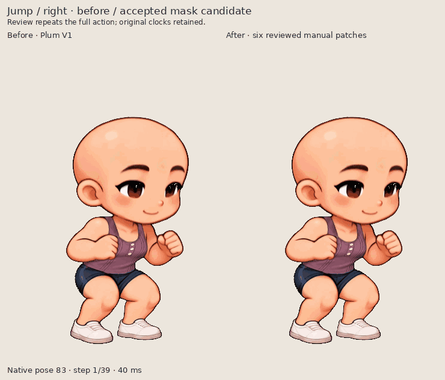
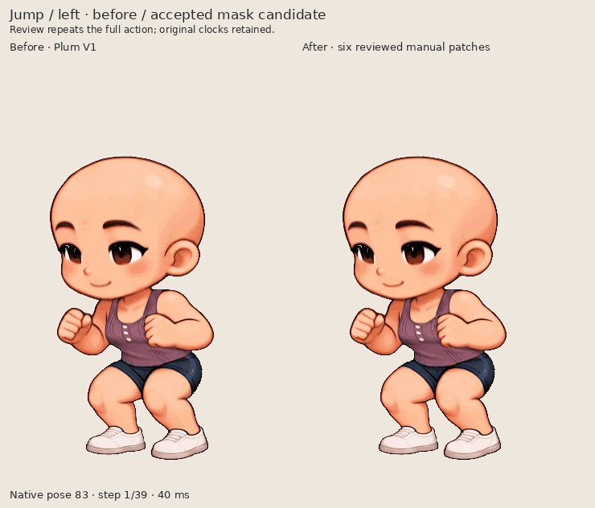
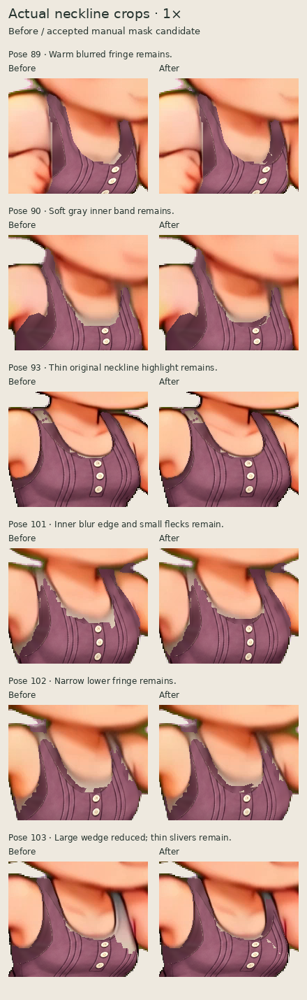

Kling mask workbench: actual export review
Exactly five presentation derivatives from hash-checked production UI downloads. Original PNG/GIF/CharacterPack and workbench files remain linked below. Character pixels are not retouched; GIF review layouts use one shared lossy palette.
The large pose103 neckline wedge improves, while ambiguous gray blur and thin fringes remain. The final six changes are reviewed manual patches. Separately recorded anchor-based neighboring suggestions remain pending or rejected; they are not silently accepted or described as fully automatic repairs.
Jump / right · before / accepted mask candidate
The six accepted manual patches are visible in the original rightward jump. Pose103 loses most of the large gray right-neck wedge; the soft source neckline band at90 and narrow fringes remain.

Original before GIF · Original after GIF
Jump / left · before / accepted mask candidate
The same before/after action faces left through the existing mirror playback. This review loop repeats a source one-shot jump; its original download remains one-shot.

Original before GIF · Original after GIF
Six native neckline comparisons
These six changes are individually authored and explicitly accepted. They are not six successful automatic propagations. Remaining blur/fringes are labeled; technical checks do not establish final artistic acceptance.
Native1× · Integer2×

Original native PNG downloads
Actual portable downloads
The character pack was exported after an exact saved-project reopen, then played in a separate player after the editor closed. Temporary project paths are not published as download links.
Workflow and player screenshots
Production capture · Independent artifact audit · Workflow and limitations